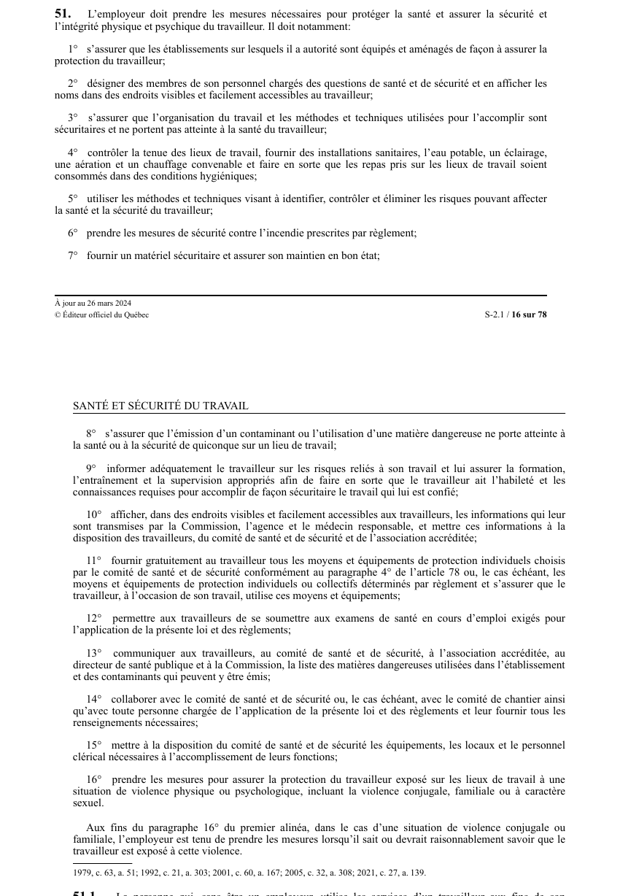

art-51-LSST : obligations générales de l'employeur
Un article du wiki ⚖️ Recueil législatif
En bref
L'employeur doit prendre les mesures nécessaires pour protéger la santé et assurer la sécurité et l'intégrité physique et psychique du travailleur. Cette obligation vise l'employeur.
- Information, équipements de protection, prévention de la violence incluant la violence conjugale et familiale.
🌐 LegisQuébec · 📄 PDF officiel (page 16)
Texte officiel : capture du PDF
{kind=link}

Toucher l'image pour l'agrandir🔗 Ouvrir a cette page : LSST.pdf : page 16 · texte a jour au 26 mars 2024
Jurisprudence et diligence raisonnable
Les manquements à l'art. 51 sont des infractions de responsabilité stricte : l'employeur peut invoquer la défense de diligence raisonnable (arrêt R. c. Sault Ste-Marie), en prouvant les trois devoirs (prévoyance, efficacité, autorité).
- 📚 Arrêt Sault Ste-Marie
- 📚 La défense de diligence raisonnable
Voir aussi
- art. 49.1 : interdiction travail facultés affaiblies · interdiction : le travailleur ne doit pas exécuter son travail lorsque son état représente un risque pour sa santé, sa sécurité ou son intégrité physique ou psychique, notamment en raison de facultés affaiblies par l'alcool, la drogue, incluant le cannabis, ou une substance similaire.
- art. 50 : droit employeur formation information · champ d'application : l'employeur a notamment le droit, conformément à la présente loi et aux règlements, à des services de formation, d'information et de conseil en matière de santé et de sécurité du travail.
- art. 51.1 : obligations utilisateur services travail · définition : la personne qui, sans être un employeur, utilise les services d'un travailleur aux fins de son établissement doit respecter les obligations imposées à un employeur par la présente loi.
- art. 51.2 : obligation employeur facultés affaiblies · obligation : l'employeur doit veiller à ce que le travailleur n'exécute pas son travail lorsque son état représente un risque pour sa santé, sa sécurité ou son intégrité physique ou psychique, notamment en raison de facultés affaiblies par l'alcool, la drogue, incluant le cannabis.
- 🔧 Modifié par : LMRSST · Article modificateur de la LMRSST.
- ⚙️ Applications sectorielles : RSSM (mines) · RSST (général)
- ↑ Loi : LSST
Pages qui pointent ici (27)
- art-139-LMRSST : modifie l'art. 51 LSST Recueil législatif
- art-49.1-LSST : interdiction travail facultés affaiblies Recueil législatif
- art-50-LSST : droit employeur formation information Recueil législatif
- art-51-11-LSST Ergonomie
- art-51-11-LSST Hygiène industrielle
- art-51-11-LSST Sécurité industrielle
- art-51-4-LSST Ergonomie
- art-51-4-LSST Hygiène industrielle
- art-51-LSST Ergonomie
- art-51-LSST Hygiène industrielle
- art-51-LSST Sécurité industrielle
- art-51-LSST Toxicologie
- art-51.1-LSST : obligations utilisateur services travail Recueil législatif
- art-51.2-LSST : obligation employeur facultés affaiblies Recueil législatif
- art-62.5-LSST : programme formation produits dangereux Recueil législatif
- Délais clés en SST québécoise Recueil législatif
- Démarrage rapide - Conseiller SST Recueil législatif
- Démarrage rapide - Direction et RH Recueil législatif
- Démarrage rapide - Travailleur Recueil législatif
- EPI Recueil législatif
- Index par profil Recueil législatif
- LMRSST : Chapitre II : Modifications à la LSST Recueil législatif
- LSST Recueil législatif
- LSST : Chapitre II : Droits et obligations Recueil législatif
- Obligation de moyens Recueil législatif
- PDFs de jurisprudence et de doctrine Recueil législatif
- Règlement premiers secours Recueil législatif